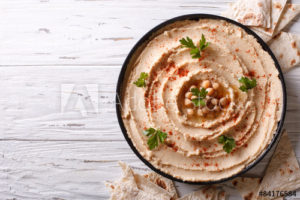

<< Home
Garlic Hummus

A Nutty & Savory Spread!
Whip up irresistible garlic hummus by blending chickpeas, tahini, and lemon juice until creamy. Add minced garlic
for a bold kick, then finish with olive oil and paprika for a flavor explosion! Perfect for dipping or
spreading—prepare to dazzle taste buds with every bite!
Ingredients:
- 1 can / 15oz chickpeas, drained and rinsed
- 1/4 cup tahini
- 2-3 cloves garlic, minced
- 3 tbsp lemon juice
- 2 tbsp extra virgin olive olive
- 1/4 teaspoon ground cumin
- 2-4 tbsp water
Steps:
- Blend Chickpeas and Tahini: In a food processor, combine chickpeas, tahini, minced garlic,
lemon juice,
salt, and ground cumin until smooth and creamy.
- Drizzle in Olive Oil: With the food processor running, slowly add olive oil to emulsify and
enhance the
texture of the hummus.
- Adjust Consistency: Gradually incorporate water, one tablespoon at a time, until the hummus
reaches your
preferred thickness.
- Taste and Adjust: Taste the hummus and adjust salt and lemon juice to your liking for the
perfect balance
of flavors.
- Serve and Garnish: Transfer the hummus to a serving dish, drizzle with a bit of olive oil,
sprinkle with
paprika for color, and serve with your favorite accompaniments. Enjoy!